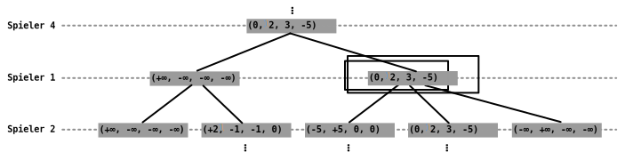
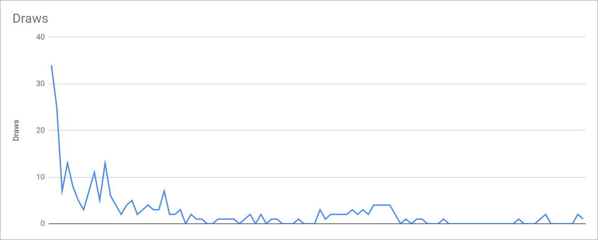
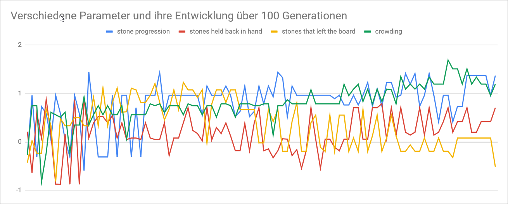

Die Aufgabe dieses Projektes ist es eine AI für das für das Brettspiel "Sawhian" zu entwickeln. Für das finden von Zügen wird eine Suche im Spielbaum verwendet. Die Heuristik für das Bewerten von Spiel-Zuständen wird von einem genetischen Algorithmus optimiert.
Damit die AI entwickelt werden kann müssen zuerst ein Fundament von Basis-Funktionalitäten geschaffen werden, auf dem die AI aufgebaut werden kann.
Die Klasse Client ist gewissermaßen der Einstiegspunkt des Projekts. Hier läuft die Main-Loop der AI und es werden auf die anderen Klassen zugegriffen. Der Client erzeugt und verwaltet Instanzen von GameState und GameTreeEvaluator und verwendet diese um den passenden Zug zu finden um diesen dann an den Server zu schicken. Der Client selber erbt von der Klasse Thread. Somit können zu Testzwecken einfach mehrere Clients erzeugt werden und parallel laufen.
Die Klasse Client enthält auch eine statische main-Methode, die einen oder mehrere Clients erzeugt und startet.
Der Spielserver liefert keinerlei Informationen über den aktuellen Stand des Spieles. Dies hat zur Folge, das der Client seine eigene Datenstruktur implementieren muss, die den aktuellen Zustand (Game State) speichert. Dies wird durch die Klasse GameState getan, diese Klasse speichert welche Felder von welchen Spielern besetzt sind, sowie für jeden Spieler zusätzliche Informationen wie Punktestand und Steine auf der Hand und außerdem welcher Spieler gerade an der Reihe ist.
Des weiteren muss dieser Zustand in einen anderen Zustand überführt werden, wenn ein Spieler einen Zug macht. Diese Überführung wird mit dem Konstruktor public GameState(GameState gameState, Move move) umgesetzt, der aus dem alten Zustand und einem Zug den Zustand nach dem ausführen des Zuges konstruiert. Die Start-Position des Spiels ist durch den Argument-losen-Konstruktor public GameState() gegeben.
Um überhaupt zu wissen welche Züge der AI zur Verfügung stehen (ausgehen von einem bestimmten Zustand) müssen diese Spielregel-konform gefunden werden.
Die Spielregeln für "Sawhian" lauten wie folgt (Zitiert aus der Aufgabenstellung:)
Das finden von möglichen Zügen ist in der Methode getPossibleMoves der Klasse GameState implementiert. Da diese Methode auf einer GameState-Instanz aufgerufen wird, findet sie die Züge ausgehend von diesem Zustand und dem Spieler der laut diesem Zustand an der Reihe ist. Diese Methode prüft für alle 49 Felder des Spielfeldes, ob hier ein Zug möglich ist. Die Methode zum prüfen eines Zuges an einer bestimmten Position ist processMove. Dieselbe Methode kann auch verwendet werden um den Zug auszuführen, dies vermeidet Code Duplication.
Um Methoden wie processMove Spieler-unabhängig zu implementieren muss eine Transformation ausgeführt werden. Die Züge, die an den Server gesendet werden geben Koordinaten absolut an, aber für die Validierung und Ausführung von Zügen ist es nützlich die Koordinaten relativ zu einem bestimmten Spieler anzugeben.
Hierfür wurden die statischen Methoden localX und localY implementiert. Diese berechnen die lokale (zum Spieler relative) x- bzw. y-Koordinate. Praktisch gesehen handelt es sich hierbei um eine Rotation in 90°-Schritten (90° mal Spieler-Nummer). Um umgekehrt von lokalen zu globalen Koordinaten umzurechnen gibt es die Methoden globalX und globalY.
Mit der im vorherigen Kapitel beschriebenen Funktionalität kann man bereits eine "AI" schreiben, die den aktuellen Zustand speichert und dann jeweils einen zufälligen Zug aus den möglichen Zügen auswählt und an den Server schickt. Um jedoch eine schlau wirkende AI zu entwickeln, sollte diese einen möglichst guten Zug finden und vorausschauend agieren.
Dies soll durch das Konzept des Durchsuchens des Spielbaums ermöglicht werden und ist in der Klasse GameTreeEvaluator implementiert.
Der Spielbaum ist die abstrakte Baum-Darstellung aller möglichen zukünftigen Spielzustände ausgehend von einem Zustand.
In diesem Baum können wir jedem Zustand einen Wert zuweisen, der beschreibt wie günstig dieser Zustand für uns ist. Um diesen Wert herauszufinden müssen die Kinder-Knoten dieses Zustands betrachtet werden (also alle Zustände, die sich aus den möglichen Zügen dieses Zustands ergeben). Es wird der maximale Wert aus den Werten dieser Knoten gewählt - wobei hier "maximal" aus Sicht des Spielers der an der Reihe ist definiert ist. Indem man im Baum eine Tiefensuche durchführt und dabei die Werte der Knoten von den Kindern nach oben durch ausrechnet, kann man allen Zuständen einen Wert zuweisen.
Bei zwei Spielern spricht man von einem Min-Max-Algorithmus, da immer abwechselnd minimiert bzw. maximiert wird (maximieren aus der Sicht des Gegners = minimieren). Bei vier Spielern greift dieses Prinzip so nicht. Deshalb wurde die Bewertung des Zustands nicht durch eine Zahl des Wertebereichs [-∞, +∞] modelliert sondern stattdessen durch ein Tupel (x1, x2, x3, x4) aus vier Zahlen jeweils im Wertebereich [-∞, +∞]. Dieses Tupel ist normiert sodass die Summe der Komponenten 0 ergibt: x1 + x2 + x3 + x4 = 0
Jede dieser Zahlen gibt an wie günstig der Zustand für den jeweiligen Spieler ist. So ist z.B. (-1, -1, -1, 3) ein für Spieler 4 günstiger Zustand. Durch die Normierung können die Bewertungen besser verglichen werden. Es sollte z.B. keinen Unterschied zwischen (1, 1, 1, 1) und (3, 3, 3, 3) geben, denn in beiden Szenarios sind die Spieler gleichauf. Beide Tupel werden durch die Normierung auf (0, 0, 0, 0) abgebildet und sind somit nach der Normierung identisch.
 Nun können wir den Wert eines jeden Knoten im Spielbaum auf das Maximum der Kinder-Knoten setzen und hierbei das Maximum bezüglich des Spielers der gerade an der Reihe ist verwenden. Spieler 1 maximiert den ersten Wert im Tupel, Spieler 2 den zweiten, und so weiter.
Ist ein Zustand ein End-Zustand, in dem ein Spieler gewonnen hat, wird der Tupel-Wert für diesen Zustand so gesetzt, dass der Gewinner +∞ hat und die Verlierer jeweils -∞. Für einen Gewinn von Spieler 1 wäre das z.B. (+∞, -∞, -∞, -∞).
Da wir nicht den ganzen Spielbaum ausrechnen können (wegen Rechenzeit und Speicher-Limitationen), muss ab einer gewissen Tiefe eine Heuristik verwendet werden um die Suche im Spielbaum zu terminieren. Diese Heuristik ist in GameState.evaluate implementiert und addiert verschiedene Gewinn-Indikatoren, z.B. wie vorangeschritten die Steine auf dem Spielfeld sind, wie viele Steine in der Hand sind und wie nah Steine beieinander sind. Auf die Gewichtung dieser Indikatoren wir später genauer eingegangen.
Die Implementierung des Algorithmus macht es einfach die Suche ab einer bestimmten Tiefe abzubrechen. Dies ist aber für die Aufgabenstellung nicht direkt zielführend, da für jeden Zug eine begrenzte Zeit zur Verfügung steht. Es wäre also schön die Suche nach einer gewissen Zeit abbrechen zu können.
Um dies zu ermöglichen erbt die Klasse GameTreeEvaluator ebenfalls von Thread. Um eine Suche durchzuführen wird eine Instanz von GameTreeEvaluator erzeugt und die Suche gestartet. Um den Thread dann abzubrechen wir die Methode getResult aufgerufen. Diese Methode setzt eine Flag auf true, die bewirkt dass in der rekursiv implementierten Suche sofort abgebrochen wird und noch nicht berechnete Zweige nicht in Erwägung gezogen werden.
Dies hat natürlich das Problem, dass bestimmte Teilbäume gar nicht berechnet werden und somit ein guter Zug verpasst werden kann. Dies wurde dadurch versucht zu vermeiden, dass die Tiefe so gewählt wird das das Zeitlimit üblicherweise nicht erreicht wird. Eine bessere Strategie wäre eventuell die Züge der Heuristik nach zu sortieren. Oder den Spielbaum hintereinander in mehreren Tiefen zu berechnen. Dies Ansätze wurden allerdings nicht implementiert.
Eine Art und Weise die Suchzeit zu verkürzen ist mit Hilfe von Alpha-Beta-Optimierung bestimmte Teilbäume "abzuschneiden", d.h. von der weiteren Berechnung auszuschließen, wenn garantiert werden kann, dass von diesem Teilbaum kein besseres Ergebnis zu erwarten ist.
Diese Garantie ist bei zwei Spielern möglich, da der andere Spieler einen für uns minimal günstigen Zug wählt. Bei vier Spielern ist das allerdings nicht gegeben, da der nächste Spieler unter Umständen einen Zug wählen könnte der für mich und für ihn gut ist, aber für die anderen Spieler schlecht.
Oder anders ausgedrückt: Wenn man als Bewertung eines Zustands das bereits beschriebene Tupel verwendet gibt es keine Möglichkeit die Alpha-Beta-Optimierung zu implementieren.
Es wurde die Alpha-Beta Optimierung trotzdem implementiert und zwar wie folgt: Ist in einem Unter-Baum der aktuell beste Zug des aktuellen Spielers für den vorherigen Spieler schlechter als der bisher beste Zug für den vorherigen Spieler, wird dieser Unterbaum abgebrochen. Dies folgt der Logik, dass der vorherige Spieler diesen Unterbaum nicht wählen wird, da hier der bisher beste Zug schlecht für den vorherigen Spieler ist.
Dies funktioniert nicht garantiert, da unter Umständen ein Zug gefunden werden könnte, der sowohl für den aktuellen Spieler besser ist als auch für den vorherigen Spieler besser ist. Nimmt man an, das dies unwahrscheinlich ist, ist die Optimierung unter Umständen dennoch sinnvoll. Dies müsste allerdings genauer untersucht werden.
Wie bereits erwähnt wurde eine Heuristik-Funktion geschrieben, diese ist in GameState.evaluate implementiert. Die Funktion nimmt als Parameter ein Array aus vier Float-Werten. Jeder dieser float-Werte ist eine Gewichtung für einen bestimmten Aspekt, der gemessen wird und kann einen Wert zwischen -1 und 1 annehmen. Die Werte sind wie folgt (entnommen aus einem Programmcode-Kommentar):
0 - stone progression
1 - stones held back in hand
2 - stones that left the board
3 - crowding (keeping your stones close together)
Der AI-Trainer (Klasse AITrainer) hat nun die Aufgabe für diese vier Parameter möglichst optimale Werte zu ermitteln. Dazu wurde ein genetischer Algorithmus verwendet.
Der Algorithmus läuft für 100 Generationen. In der ersten Generation wird eine Liste an Tupeln erstellt, jedes Tupel ist gefüllt mit vier zufälligen Werten zwischen -1 und 1.
Zu Beginn einer Generation werden 500 Testspiele gespielt (Generationsgröße mal fünf). Diese Testspiele laufen ohne Server, es wird lediglich ein Spiel durch die GameState-Klasse und vier GameTreeEvaluators simuliert. Passen alle vier Spieler ist das ein Unentschieden. Welche Spieler gegeneinander spielen ist dabei zufällig da die Liste and Tupeln nach jeder Generation gemischt wird (genauere Implementationsdetails sind den Code-Kommentaren zu entnehmen). Es wird sich gemerkt wie viele Spiele jeder Spieler gewonnen hat und die Spieler werden nach ihrer Anzahl an gewonnenen Spieler sortiert.
Die besten 25% werden so wie sie sind in die nächste Generation übernommen. Die restlichen 75% sind jeweils eine Kombination aus zwei "Eltern" der 25%. Hierbei wird für jeden Parameter des Tupels zufällig der Wert von einem der Elternteile ausgewählt. In 5% der Fälle wird außerdem eine zufällige Zahl zwischen -0.5 und 0.5 addiert, um Mutationen zu simulieren.
Der gesamte Vorgang wird in eine log-Datei geschrieben. Jede Generation werden die Gewinne der Spieler, die Anzahl an Unentschieden und das Tupel des besten Spielers geloggt. Dies erlaubt aus diesen Daten Diagramme zu erstellen.
Hier ist z.B. eine Visualisierung eines Trainingsprozesses zu sehen:


Man kann erkennen, dass die Anzahl der unentschiedenen Spiele rapide sinkt und dann niedrig bleibt, was bedeutet, das die Spieler gut darin werden Unentschieden zu vermeiden. Außerdem sieht man, dass sich das beste Tupel durchaus einem groben Optimalwert annähert. Es ist allerdings nicht gut, dass hier von Generation zu Generation auch gegen Ende noch so große Schwankungen zu erkennen sind. Dies könnte man vielleicht durch eine höhere Anzahl an Test-Spielen oder einer geringeren Mutations-Wahrscheinlichkeit oder -Stärke vermeiden.
Es ist gelungen eine passable AI zu implementieren. Es ist fragwürdig ob der genetische Algorithmus bei einer so geringen Anzahl an Parametern zielführend war. Man könnte die Heuristik noch flexibler gestalten um hier bessere Ergebnisse zu erzielen. Man könnte die Spielbaum-Suche verbessern, sodass sie sich flexibler an das Zeitlimit anpasst, z.B. indem man die Züge nach der Heuristik sortiert, oder den Baum für inkrementelle Tiefen berechnet. Alles in allem hat sich der Spielbaum jedoch als gutes Mittel bewiesen um eine Brettspiel-AI zu implementieren.